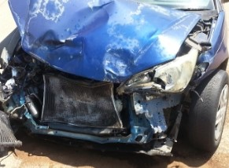

Damages to a car can mean a lot of different things. Such as broken body or iternals on the car. There are also some anuual matnence that you do haft to do to a car for example, you need to change the oil everyone once in a while There can be a lot of different reasons for a car to need to be fixed/rpaird. Here is a list of the 7 most damaged parts of a car.
 1. Front Bumper It makes a lot of sense the front bumper tops our list. Most accidents involve at least one traveling forward and the front bumper is the first thing to receive the impact. Collisions are not the only cause of bumper damage, though. Inattentive driving can result in scraping the sides of a bumper, leaving ugly marks many owners would rather be without.
2.Fender Although sometimes confused, bumpers and fenders are different and easy to tell apart. Bumpers are on the front and rear of the car and are designed to protect it from impacts. Fenders are, essentially, the frame of the wheel well. Their main purpose is to catch “road spray” and prevent tires from throwing dirt and debris at other vehicles and pedestrians. Just like bumpers, though, fenders often absorb a lot of the force of any impact. Side collisions, in particular, tend to damage fenders.
3.Rear Bumper Nobody likes being rear-ended, but rear bumpers sure get damaged a lot. Whether it’s from backing into a post, dumpster or another vehicle or from a minor crash, rear bumpers get cracked, dented and destroyed fairly often. Be careful when assessing bumper damage. What many people consider the bumper is actually just a plastic cover for the functional part of the bumper. There is a thick foam pad underneath the plastic cover. This layer of foam is actually what protects you in an accident. If you have been in a crash or bought a car with a cracked bumper, you should get the bumper checked. If the foam is still intact, then you can just replace the plastic cover. Otherwise, you should replace the foam too, or the bumper may not function as designed if you are ever in another accident.
4. Grille After the front bumper, the next part of your car to be hit from the front is the grille. Designed to let air flow into the engine compartment, grilles are tough, but they do get destroyed in accidents. Fortunately, most drivers swerve to avoid accidents, sparing grilles from more damage than they would otherwise receive. When a grille is damaged, though, it should be replaced for two reasons. First, it may restrict airflow, causing engine problems. Second, it looks bad. People notice grilles right away and a damaged grille can make an otherwise perfect car look awful.
5. Hood Hood damage happens for all kinds of reasons. While car accidents are the obvious cause of crumpled hoods, hail and other falling objects can put serious dents in a car’s hood. Instead of writing off these imperfections as cosmetic, owners should be careful lest the hood not latch closed properly. If warping or other problems with the hood are preventing the latch from fully engaging, the hood may pop open unexpectedly and could cause an accident or result in serious damage to the rest of the car. Worse, if you are involved in a second accident and haven't replaced your hood, there's a chance it cannot crumple any more and will instead be pushed back into the passenger compartment of the vehicle.
6.Trunk Lid Just like the hood, trunks are damaged from a variety of sources. Hail, falling objects, backing into something and getting rear ended all cause trunk deck deformation. If you are ever involved in an accident severe enough to pop your trunk open, be sure to get the latch inspected. As with hoods, an insecure trunk can open while you are driving. Spending a small amount now on a replacement truck deck and latch will save you a lot of trouble down the road.
7.Front and Rear Doors Side impacts are the main cause for door damage. Modern car doors are designed to protect passengers inside a vehicle in the event of a collision. There is a surprising amount of engineering and safety built into every car door. For this reason, you should always replace damaged car doors. Safety systems, like the anti-intrusion bar, are located inside the car door, where you cannot see them. If they are not in perfect condition, they will not be able to protect you in an accident.